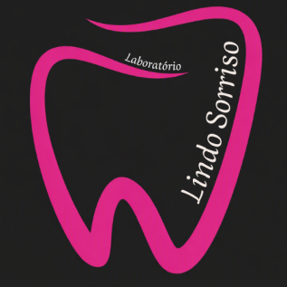
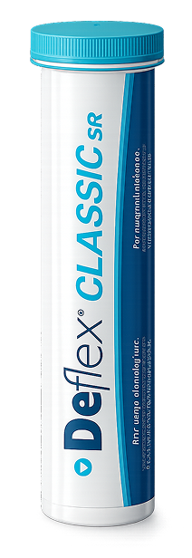
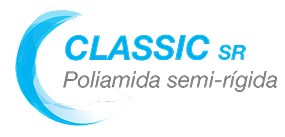
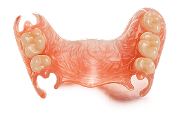
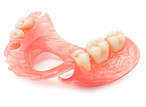
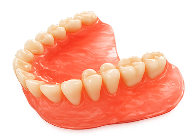

Prótese Total (PT)
Montagem + Acrilização + Dentes Nacionais
Prótese total convencional, com montagem e acrilização executadas com dentes nacionais e acabamento de alta precisão.
LABORATÓRIO
Laboratório de próteses dentárias
No Laboratório Lindo Sorriso, acreditamos que um sorriso saudável e bem planejado transforma vidas. Trabalhamos com dedicação, precisão e tecnologia para desenvolver próteses dentárias que unem estética, conforto e funcionalidade.

5 dias úteis por fase de trabalho, e 48 horas para carga imediata.
Trabalhos assinados pelo Dr. Wanilson dos Santos, CROSP 135017.
À vista, quinzenal ou mensal — o que fizer sentido para o seu consultório.
Parceria com a linha de injetáveis Deflex para próteses sem metal aparente.
Sobre o Lindo Sorriso
O Laboratório Lindo Sorriso é especializado em prótese dentária, atendendo cirurgiões-dentistas com serviços que vão da prótese total e parcial removível aos protocolos sobre implante e à linha completa de injetáveis Deflex. Cada caso passa pela bancada com o mesmo cuidado técnico, do planejamento ao acabamento final.
Nossos Serviços
Escolha a categoria e fale diretamente com o laboratório para valores e prazos.
Montagem + Acrilização + Dentes Nacionais
Prótese total convencional, com montagem e acrilização executadas com dentes nacionais e acabamento de alta precisão.
Montagem + Acrilização + Dentes Nacionais
Prótese Parcial Removível completa, da montagem à acrilização, com dentes nacionais.
Estrutura metálica sob medida
Armação metálica da Prótese Parcial Removível, planejada para encaixe e retenção precisos.
Montagem + Acrilização + Dentes Nacionais
Solução provisória para uso durante o tratamento, com o mesmo cuidado de acabamento das próteses definitivas.
Entrega em 48 horas — dente Kuzer
Protocolo de carga imediata com prazo reduzido de 48 horas, utilizando dente Kuzer para resultado estético e funcional.
Tardio — dente Kuzer
Protocolo tardio sobre implantes, com dente Kuzer, indicado para reabilitações planejadas após a osseointegração.
Dois retentores + 1 barra
Barra com dois retentores para overdenture, garantindo retenção e estabilidade à prótese sobre implante.
Alta flexibilidade e conforto
Prótese flexível em poliamida Flexys, leve e confortável, sem ganchos metálicos aparentes.
Leveza e resistência
Prótese flexível em polipropileno, indicada para pacientes que buscam leveza aliada à resistência no dia a dia.
Acréscimo de reforço
Reforço em tela de nylon aplicado à estrutura da prótese para maior durabilidade.
Acréscimo de reforço
Reforço em tela metálica para próteses que exigem resistência estrutural adicional.
Unidade
Grampo estético para retenção discreta em próteses parciais removíveis.
Reparo de próteses
Serviço de reparo para próteses danificadas, devolvendo função e estética rapidamente.
Substituição temporária
Confecção de elemento provisório para substituição temporária durante o tratamento.
Acrílico
Placa de proteção em acrílico para pacientes com bruxismo, confeccionada sob medida.
3mm
Placa de silicone com 3mm de espessura, indicada para proteção e conforto.
Resina nacional
Restaurações indiretas em resina nacional, com ajuste e acabamento de precisão.
Restauração estética
Sistema de restauração estética Artglass, com resultado de alta qualidade e durabilidade.
Linha Deflex
Trabalhamos com a linha de materiais termoplásticos injetáveis Deflex, referência em conforto e estética para próteses flexíveis e semi-flexíveis.



Nossos Trabalhos
Os casos mais recentes, do planejamento ao resultado final, estão sempre no nosso Instagram. Acompanhe de perto o trabalho de bancada.


@lab.lindosorriso
Perguntas Frequentes
O prazo padrão é de 5 dias úteis por fase. Para o protocolo de Carga Imediata, a entrega é feita em 48 horas.
Aceitamos pagamento à vista, quinzenal ou mensal. Fale com a nossa equipe pelo WhatsApp para combinar a melhor condição para o seu consultório.
Não. Dentes importados são cobrados à parte do valor padrão do serviço, que utiliza dentes nacionais.
O consultório deve enviar Uclas e enviar um sistema de barra + clipes para confecção da barra.
É simples: fale com a nossa equipe pelo WhatsApp informando o serviço desejado e combinamos juntos a melhor forma de envio do caso.
Deflex é uma linha de materiais termoplásticos injetáveis usada em semi-flexíveis, sem necessidade de grampos metálicos aparentes. Trabalhamos com a linha completa de injetáveis Deflex.
O responsável técnico é o Dr. Wanilson dos Santos, CROSP 135017.
Contato
Fale com a nossa equipe pelo WhatsApp e envie o seu primeiro caso. Respondemos rápido e combinamos juntos o melhor fluxo para o seu consultório.

